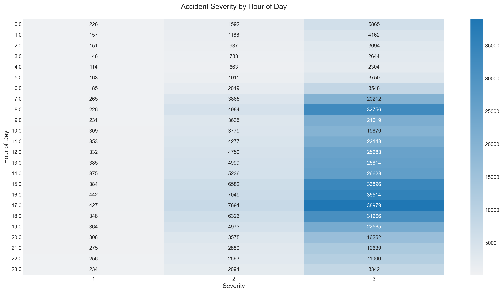
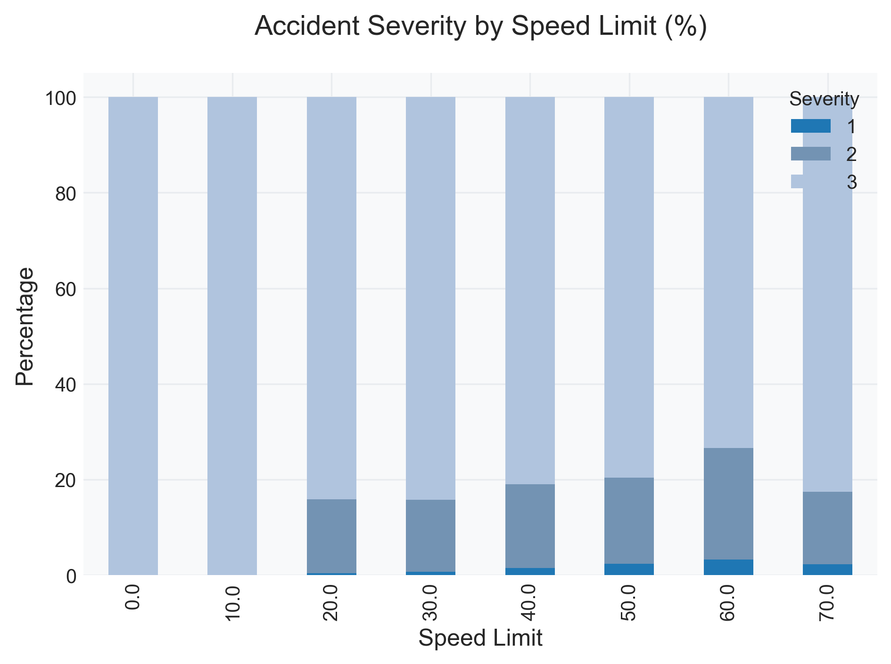
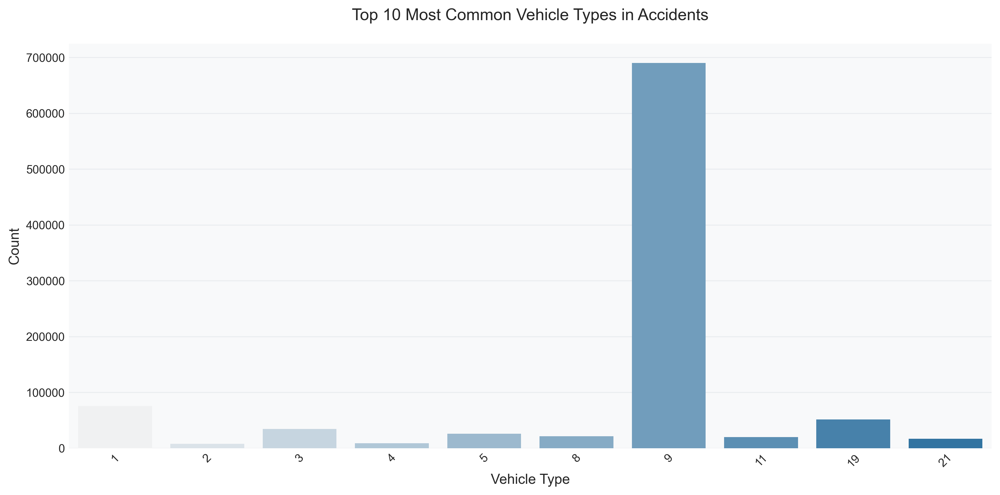
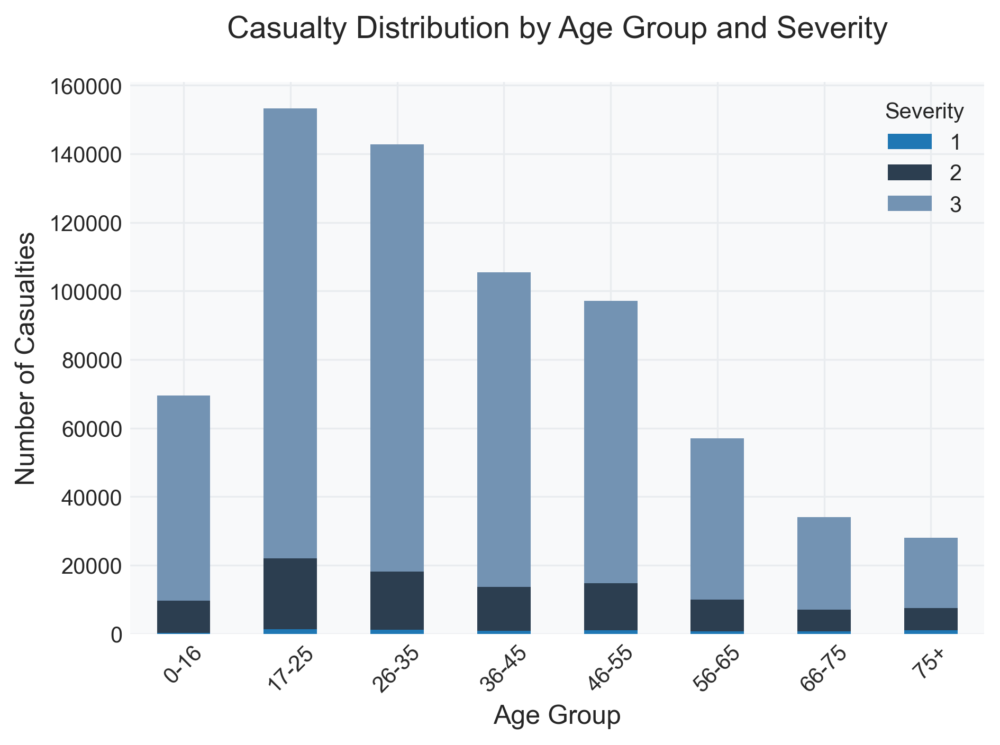

UK Traffic Accident Analysis (2015-2018)
Road safety remains one of the most critical public health challenges in the United Kingdom, affecting thousands of lives annually through accidents, injuries, and fatalities. This comprehensive analysis examines traffic accident data from 2015 to 2018, seeking to understand the complex interplay of factors that contribute to road incidents and their severity. By analyzing over 529,294 accidents, this study provides crucial insights into patterns, risk factors, and potential intervention points for improving road safety.
The significance of this analysis extends beyond mere statistics, touching upon fundamental aspects of public safety, urban planning, and social responsibility. Through detailed examination of temporal patterns, environmental conditions, and demographic factors, we uncover the multifaceted nature of traffic accidents. The findings reveal how various elements - from weather conditions and road types to driver demographics and vehicle characteristics - interact to influence both the likelihood and severity of accidents. This understanding is crucial for developing targeted interventions and evidence-based policies to enhance road safety.
This study employs advanced statistical analysis and visualization techniques to decode complex patterns within the data, focusing particularly on identifying high-risk scenarios and vulnerable populations. By examining the relationship between factors such as time of day, weather conditions, road types, and accident severity, we aim to provide actionable insights for policymakers, urban planners, and road safety professionals. The analysis pays special attention to age-related patterns, environmental impacts, and vehicular factors, offering a comprehensive view of road safety challenges in the UK.
Research Objectives:
- Identify temporal and seasonal patterns in accident occurrence
- Analyze the impact of environmental and road conditions
- Evaluate demographic patterns in casualties
- Assess vehicle-specific risk factors
- Develop evidence-based safety recommendations
Methodology and Data Overview
This analysis utilizes comprehensive accident data from 2015 to 2018, incorporating multiple data sources to provide a holistic view of road safety incidents.
Data Dictionary
Accidents Dataset
| Field Name | Description | Data Type | Values/Format |
|---|---|---|---|
| Accident_Index | Unique identifier for each accident | String | Unique value linking to vehicle and casualty data |
| Location_Easting_OSGR | Easting location in OSGR format | Numeric | Grid Reference (-1 for missing data) |
| Location_Northing_OSGR | Northing location in OSGR format | Numeric | Grid Reference (-1 for missing data) |
| Longitude | Longitude in WGS84 format | Decimal | WGS 1984 coordinate system |
| Latitude | Latitude in WGS84 format | Decimal | WGS 1984 coordinate system |
| Accident_Severity | Severity of the accident | Integer | 1: Fatal, 2: Serious, 3: Slight |
| Number_of_Vehicles | Number of vehicles involved | Integer | Count of vehicles |
| Number_of_Casualties | Number of casualties | Integer | Count of casualties |
| Date | Date of accident | Date | DD/MM/YYYY format |
| Time | Time of accident | Time | HH:MM 24-hour format |
Casualties Dataset
| Field Name | Description | Data Type | Values/Format |
|---|---|---|---|
| Accident_Index | Reference to accident record | String | Links to accident data |
| Vehicle_Reference | Reference to vehicle involved | Integer | Links to vehicle data |
| Casualty_Class | Type of casualty | Integer | 1: Driver/Rider, 2: Passenger, 3: Pedestrian |
| Sex_of_Casualty | Gender of casualty | Integer | 1: Male, 2: Female, -1: Unknown |
| Age_of_Casualty | Age of casualty | Integer | Age in years (-1 for unknown) |
Vehicles Dataset
| Field Name | Description | Data Type | Values/Format |
|---|---|---|---|
| Accident_Index | Reference to accident record | String | Links to accident data |
| Vehicle_Type | Type of vehicle | Integer | Various codes for vehicle types |
| Age_of_Driver | Age of driver | Integer | Age in years (-1 for unknown) |
| Age_of_Vehicle | Age of vehicle | Integer | Age in years (-1 for unknown) |
Detailed Analysis and Findings
1. Temporal Analysis
Key Observations:
- Peak accident times coincide with rush hours (7-9 AM and 4-6 PM)
- Highest severity rates occur during nighttime hours (11 PM - 4 AM)
- Early morning hours (2-5 AM) show lowest frequency but higher severity
- Weekend patterns differ significantly from weekday patterns
2. Weather Impact Analysis

Key Findings:
- Adverse weather conditions significantly impact accident severity
- Rain is associated with increased accident frequency but lower average severity
- Snow and ice show lower frequency but higher severity rates
- Clear weather accounts for majority of accidents due to higher traffic volume
3. Road and Speed Analysis
Critical Insights:
- Single carriageways account for highest number of accidents
- Higher speed limits correlate strongly with increased severity
- Urban roads show higher frequency but lower severity patterns
- Motorways show relatively low accident rates despite high speeds
4. Casualty Analysis
Demographic Patterns:
- Young adults (18-25) show higher representation in accidents
- Elderly casualties (65+) show higher severity rates
- Pedestrian casualties show distinct age distribution patterns
- Cyclist casualties concentrate in urban areas and peak commuting times
5. Vehicle Type Analysis
Vehicle-Specific Patterns:
- Cars represent the majority of vehicles involved
- Motorcycles show disproportionately high severity rates
- Heavy goods vehicles involved in fewer but more severe accidents
- Public transport shows lower involvement rates
6. Age Distribution Analysis
Age-Related Patterns:
- Young adults (17-25) show highest accident involvement
- Severity rates increase with age groups
- Children under 16 show distinct accident patterns
- Middle-aged groups show more moderate risk levels
Accident Correlations

Hourly Distribution

Monthly Severity Trends

Severity Heatmap

Time of Day

Time Severity

Vehicle Types
Conclusions and Recommendations
Primary Conclusions:
- Temporal Factors
- Rush hour periods require enhanced traffic management
- Night driving presents significantly higher risks
- Seasonal patterns affect accident likelihood
- Environmental Impact
- Weather conditions are crucial risk factors
- Road type and condition significantly influence outcomes
- Light conditions play a vital role in accident severity
- Human Factors
- Age and experience significantly impact risk levels
- Different road user types show distinct risk patterns
- Time of travel affects risk exposure
Recommendations:
- Implement targeted safety measures during high-risk periods
- Enhance infrastructure in identified high-risk areas
- Develop specific safety campaigns for vulnerable groups
- Improve weather-related warning systems
- Review speed limits in areas with high severity rates
Future Research Directions:
- Impact of emerging vehicle technologies on safety
- Detailed analysis of behavioral factors
- Effectiveness of various safety interventions
- Integration with real-time traffic and weather data